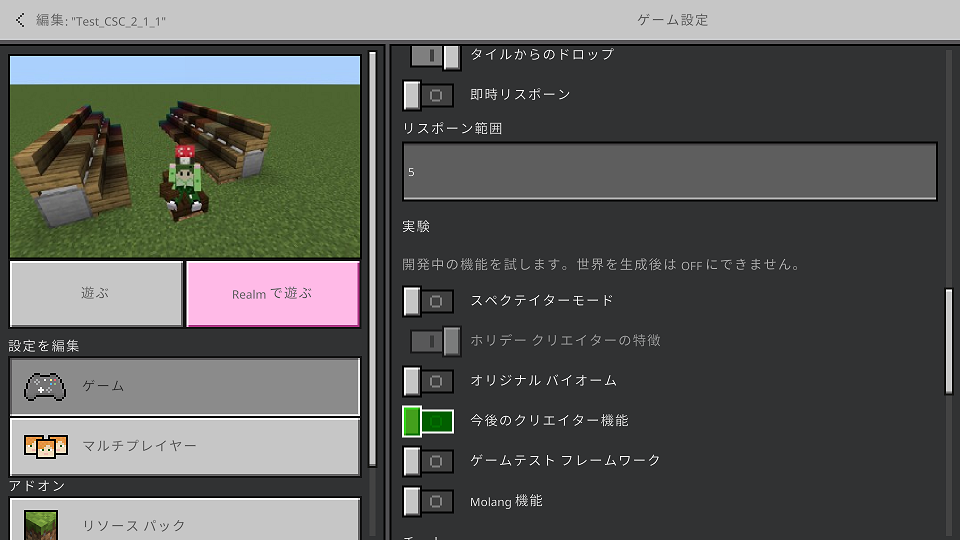
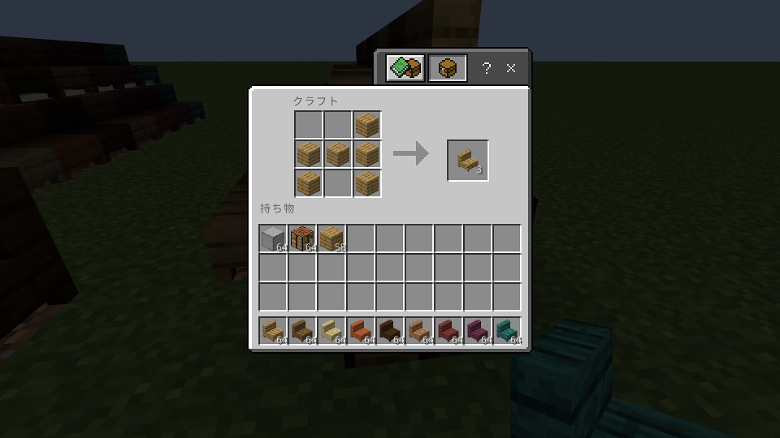
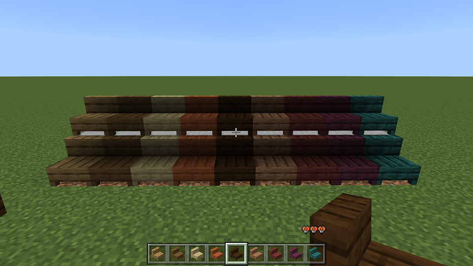

Ki_CSC_1_2_1
- 適用はBPとRPの両方です。
- 試験的ゲームプレイの設定が必要です（ゲーム設定の"実験"と書かれているところ）。"ホリデークリエイターの特徴"をONにする必要があります。既存ワールドへの適用する場合にはワールドがコピーされます。
- 
- ベンチはクラフトすることができます。クラフトテーブルは以下です。クリエイティブモードならば階段と同じところにおいてあります。
- 
- ベンチのクラフトに対応する木材は以下です。ベンチが並んでいる画像の左からの順番です。
- 樫、oakの木材、ベンチのidは"kinocoyo:acacia_bench"
- トウヒ、spruceの木材、ベンチのidは"kinocoyo:spruce_bench"
- 樺、birchの木材、ベンチのidは"kinocoyo:birch_bench"
- 黒樫、darck oakの木材、ベンチのidは"kinocoyo:dark_oak_bench"
- ジャングル、jungleの木材、ベンチのidは"kinocoyo:jungle_bench"
- マングローブ、mangroveの木材、ベンチのidは"kinocoyo:mangrove_bench"
- クリムゾン、crimsonの木材、ベンチのidは"kinocoyo:crimson_bench"
- ゆがんだ木、warpedの木材、ベンチのidは"kinocoyo:warped_bench"
- 
-
[注意]ベンチ自体はブロックですが、座る実態はエンティティです。
そのため、コマンドで"/kill @e"を実行すると、ベンチの座るためのエンティティもkillしてしまい座れなくなります。
座れなくなったベンチは、壊してからもう一度設置すれば座れるようになります。
また、"/kill @e"のコマンドが必要な場合には、ブロックにのっかっている座るためのエンティティをkillしないようにする必要があります。
具体的には"/kill @e[type=!kinocoyo:frame_sit]"です。エンティティのidはkinocoyo:frame_sitになります。
-
[注意]ベンチの設置にはプレイヤーによる設置を想定して作成しています。コマンド等で設置した場合、座ることが正しく動作するかわかりません。